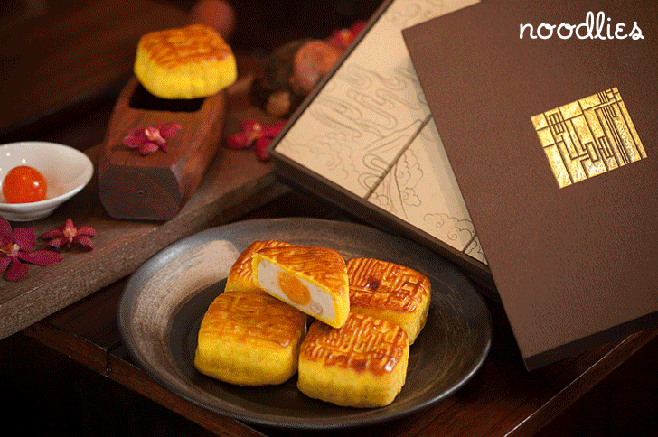

The legend of Chang'e & Houyi the archer
The Mid-Autumn Festival is a harvest festival celebrated by Chinese people. The festival is held on the 15th day of the 8th month of the lunar calendar with full moon at night, corresponding to late September to early October of the Gregorian calendar with a full moon at night.
Mooncakes have also appeared in western conuntries as exotic sweet desserts.